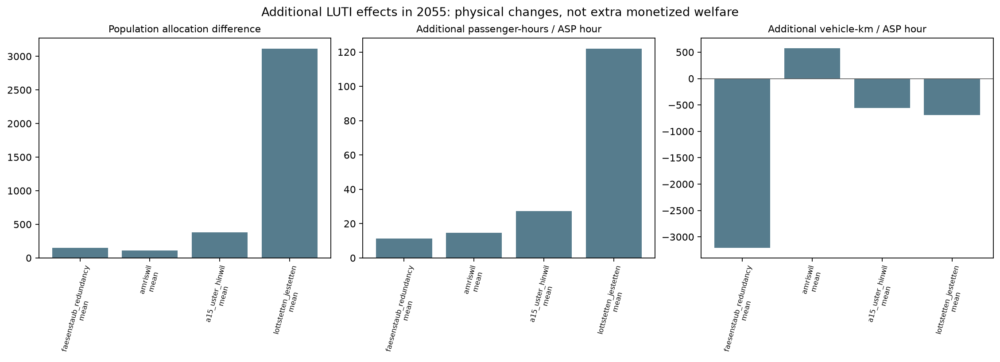
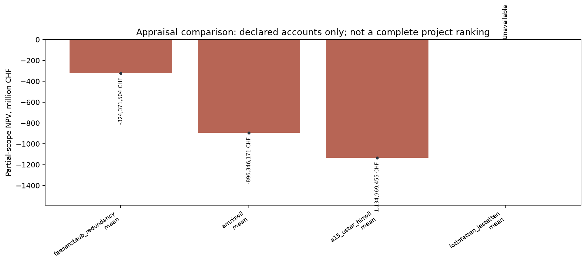
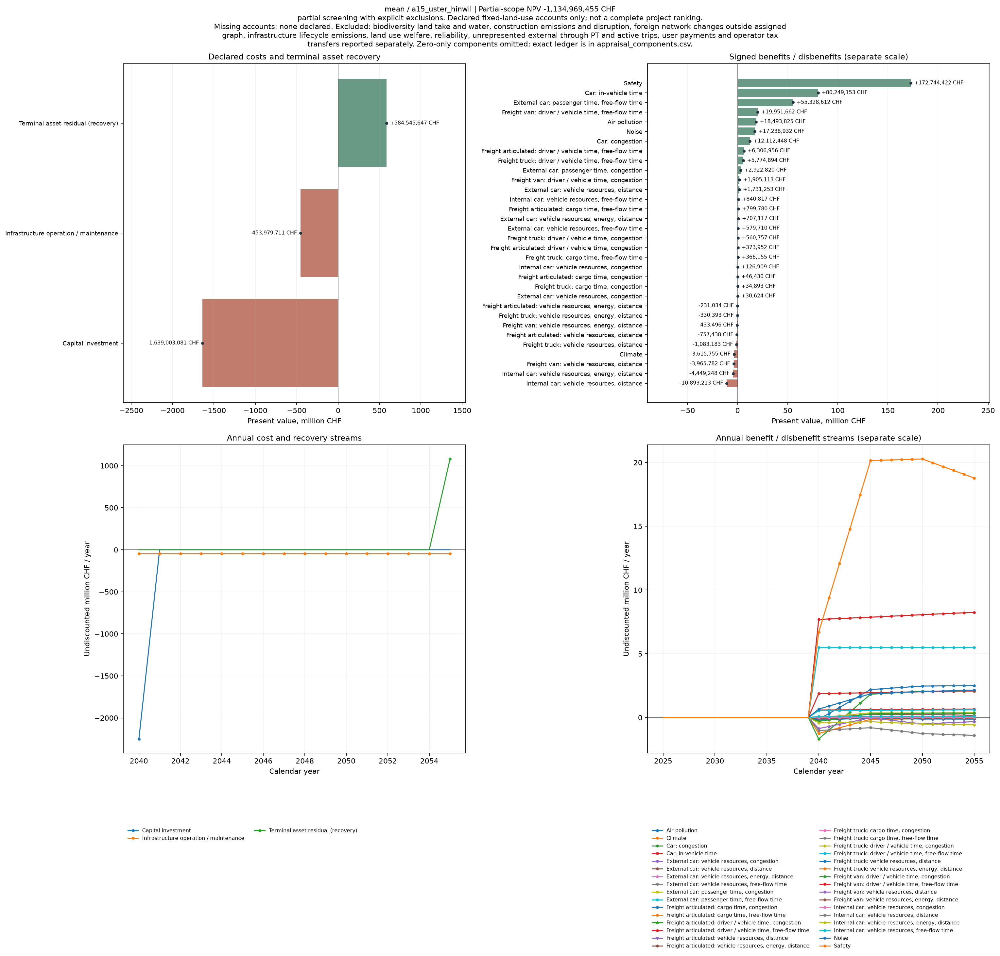
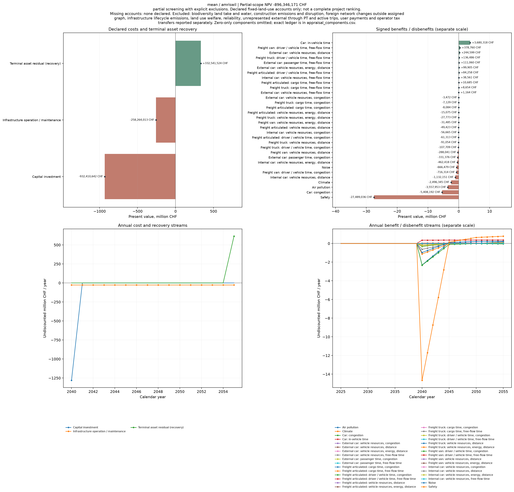
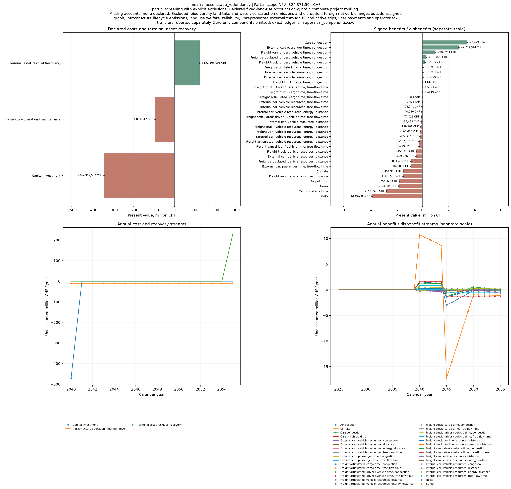
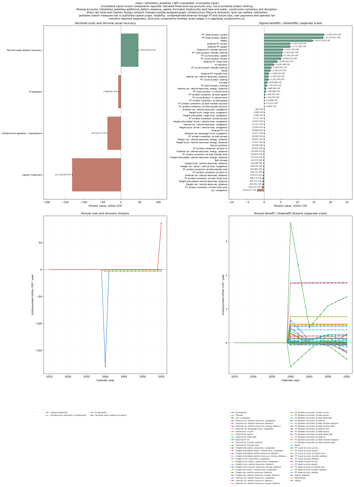
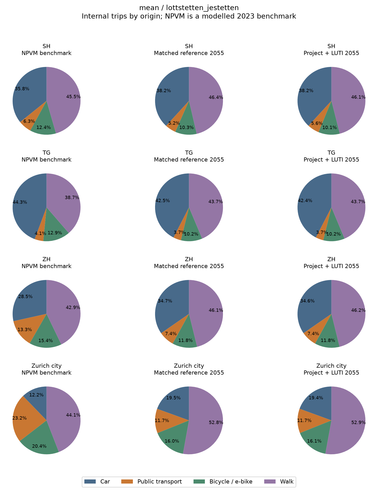
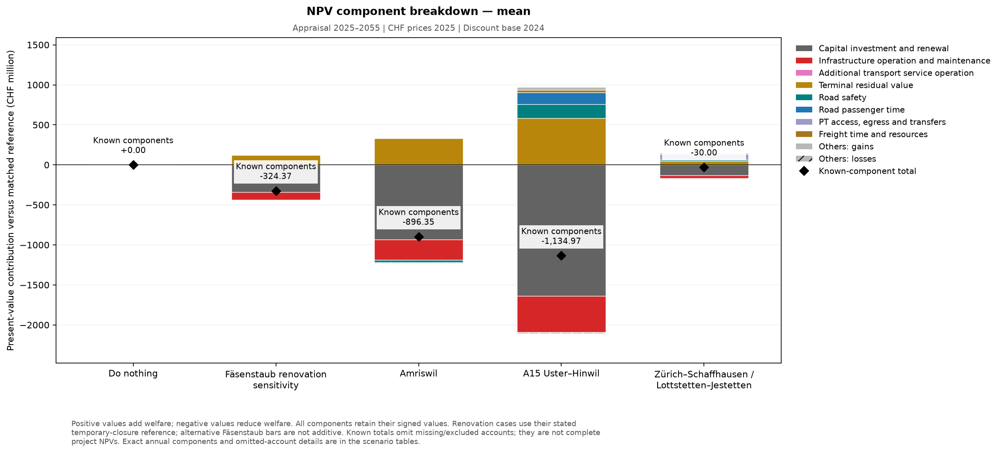
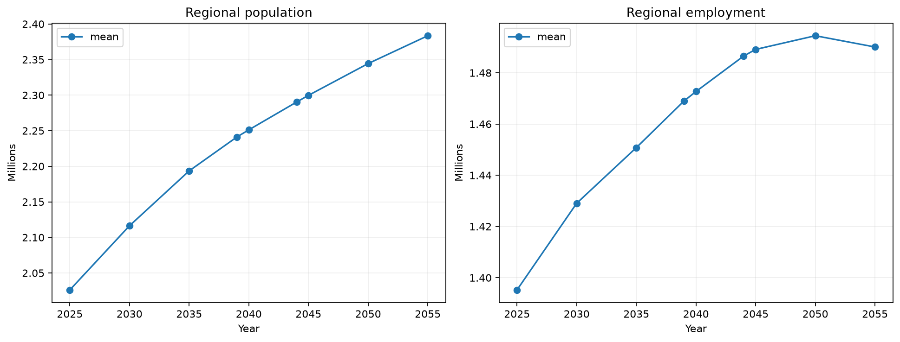

Monetary results cover the declared accounts; additional LUTI effects are reported separately. Geography, benchmark inputs and configuration are shared at the run root.
All scenarios · Configuration · Summary table · Appraisal components · NPV plot components · NPV totals · OD archive index · Network GeoPackage · Projection coverage · Editable input snapshots
| scenario | case | status | npv_chf | known_components_npv_chf | benefit_cost_ratio | reference_network_basis | comparison_description | excluded_accounts |
|---|---|---|---|---|---|---|---|---|
| mean | do_nothing | partial_screening_with_explicit_exclusions | 0.000000e+00 | 0.000000e+00 | NaN | ordinary do-nothing | Project compared with ordinary do-nothing | ["biodiversity_land_take_and_water", "construction_emissions_and_disruption", "foreign_network_changes_outside_assigned_graph", "infrastructure_lifecycle_emissions", "land_use_welfare", "reliability", "unrepresented_external_through_PT_and_active_trips", "user_payments_and_operator_tax_transfers_reported_separately"] |
| mean | faesenstaub_redundancy | partial_screening_with_explicit_exclusions | -3.243715e+08 | -3.243715e+08 | -0.029438 | case-specific temporary closure during the stated calendar years; ordinary do-nothing otherwise | faesenstaub_redundancy: no-project reference closed in 2040–2044; project uses temporary operating design | ["biodiversity_land_take_and_water", "construction_emissions_and_disruption", "foreign_network_changes_outside_assigned_graph", "infrastructure_lifecycle_emissions", "land_use_welfare", "reliability", "unrepresented_external_through_PT_and_active_trips", "user_payments_and_operator_tax_transfers_reported_separately"] |
| mean | amriswil | partial_screening_with_explicit_exclusions | -8.963462e+08 | -8.963462e+08 | -0.044530 | ordinary do-nothing | Project compared with ordinary do-nothing | ["biodiversity_land_take_and_water", "construction_emissions_and_disruption", "foreign_network_changes_outside_assigned_graph", "infrastructure_lifecycle_emissions", "land_use_welfare", "reliability", "unrepresented_external_through_PT_and_active_trips", "user_payments_and_operator_tax_transfers_reported_separately"] |
| mean | a15_uster_hinwil | partial_screening_with_explicit_exclusions | -1.134969e+09 | -1.134969e+09 | 0.247586 | ordinary do-nothing | Project compared with ordinary do-nothing | ["biodiversity_land_take_and_water", "construction_emissions_and_disruption", "foreign_network_changes_outside_assigned_graph", "infrastructure_lifecycle_emissions", "land_use_welfare", "reliability", "unrepresented_external_through_PT_and_active_trips", "user_payments_and_operator_tax_transfers_reported_separately"] |
| mean | lottstetten_jestetten | incomplete_inputs_known_components_reported | NaN | -3.000304e+07 | NaN | ordinary do-nothing | Project compared with ordinary do-nothing | ["biodiversity_land_take_and_water", "construction_emissions_and_disruption", "direct_rail_noise_and_crashes", "foreign_network_changes_outside_assigned_graph", "infrastructure_lifecycle_emissions", "land_use_welfare", "lottstetten_jestetten.station_measures_not_in_published_capital_scope", "reliability", "unrepresented_external_through_PT_and_active_trips", "user_payments_and_operator_tax_transfers_reported_separately"] |








